Лучшие производители детских автокресел
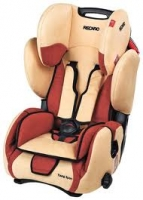
Основные производители детских автокресел
В настоящее время на рынке насчитывается около трех десятков производителей детских автомобильных кресел. Подобное количество брендов не может не радовать потребителя. Но, как правило, широкий ассортимент и разнообразие торговых марок весьма осложняет рано или поздно предстоящий выбор детского сиденья.
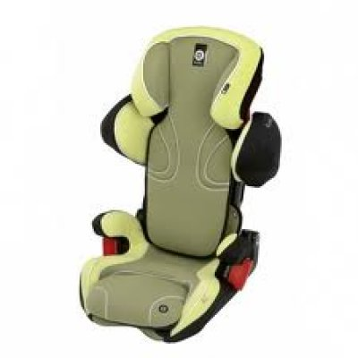
История компании Kiddy зародилась еще в далеком 1966 году, когда бизнесмен Курт Вюрстл из Мюнхена решил открыть предприятие, выпускающее автомобильные коврики и чехлы. Первоначально компания имела название Sicartex, но спустя десять лет после выхода с конвейера первого автокресла Urkiddy данную фирму назвали Kiddy. В 1978 году сиденье Urkiddy получило высочайшие оценки журнала Stiftung Warentest. Начиная с 1990 года, компания Kiddy стала крупным поставщиком детских автокресел для ряда мировых автопроизводителей. С конца девяностых годов ее последующий прорыв ознаменован разработкой системы Isofix и линейки уникальных кресел Kiddy Life. Данные изделия не остались без внимания Fachverband Kunstoff Konsumentenwaren (ассоциации потребителей пластиковых товаров). С 2002 года высокой оценкой тестовых организаций Stiftung Warentest и ADAC награждались также и другие модели, например, Kiddy Protect и Kiddy Terra. В 2006 году на свет появилась новая линейка детских автомобильных кресел Kiddy Pro. В моделях Kiddy Pro использован инновационный материал Honey Comb, обладающий сотовой структурой, которая смягчает нагрузки при ударах. С момента выхода линии Pro все без исключения модели компании Kiddy проявили отличные результаты в краш-тестах.
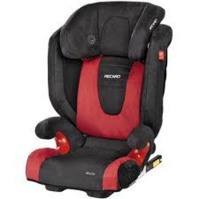
Компания Recaro создана братьями Альберт и Вильгельм Ройттер еще раньше – в 1906 году. Ее основатели были седельными мастерами, которые решили открыть фабрику колес и автомобилей под знаменитым именем «Ройттер». Фабрика изготавливала корпуса и салоны с сиденьями для таких лидеров мирового автопрома как Bugatti, Buick, Opel, BMW и Wanderer. Начиная с 1948 года, компания стала сотрудничать с Porsche. В 1963 году производство корпусов перекочевало к Porsche, а компания Ройттер переименовалась в Recaro и переключилась на выпуск сидений. Ее основные производственные мощности базировались в Штутгарте, а после слияния с KEIPER переместились в Кирххайм, где находятся и по настоящее время. В 1990 году в Кирххайме произошло открытие Recaro-центра, благодаря чему удалось сконцентрировать все производство в одном месте. По сей день компания Recaro является главным новатором в разработках автомобильных кресел. Ее продукция представлена детскими, гоночными и спортивными автокреслами, ортопедическими сиденьями для автотранспорта, а также сиденьями для коммерческого транспорта и офисными креслами.
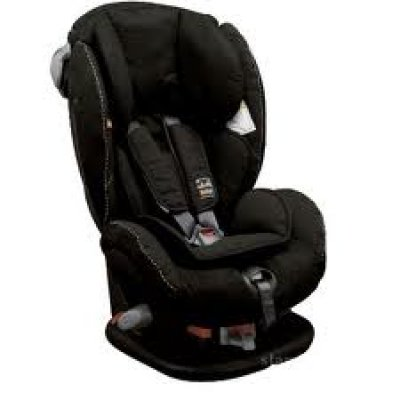
Цель производителя детских автомобильных кресел BeSafe (норвежской компании HTS) – обеспечить безопасность и комфорт маленьким пассажирам, которые путешествуют в автомобилях. Эта компания проделала длинный путь, прежде чем начала выпускать надежные детские кресла. В начале ХХ века фабрика производила шорно-седельное снаряжение. С начала тридцатых годов прошлого столетия HTS плавно перешла от изготовления конного снаряжения к автомобильному. До 80-х годов компания производила элементы салона и чехлы для автомобилей, а начиная с 1984 года, приступила к разработке первого детского автомобильного кресла BeSafe. Ее инженеры накопили достаточно большой практический опыт в области конструирования детских автокресел. С целью создания надежных сидений BeSafe сотрудничает с разными медицинскими учреждениями и научно-исследовательскими институтами по всей Европе. Детским креслам предъявляются особые требования, поэтому HTS инвестирует значительные средства в исследования и разработку современных технологий производства – ежегодно на испытания уходит ни один миллион норвежских крон.
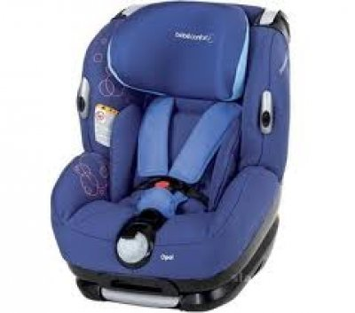
Компания по производству товаров для детей Bebe Confort основана во Франции в 1875 году. Она работает сразу в нескольких направлениях: производство мебели для детских комнат, игрушек, детской одежды, а также колясок и детских автокресел. Компания владеет несколькими фабриками, которые преимущественно расположены в европейских странах, таких как Португалия, Италия, Франция и прочих. Составные части производства оснащены в ногу со временем, даже опережая его на шаг. Вся продукция проходит жесточайший контроль и оценивается по стандарту ISO 9001. Товары Bebe Confort достаточно просты в уходе и использовании, легки, надежны и отличаются от аналогичных изделий оригинальным дизайном.
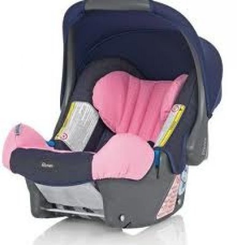
Компания Romer более пятидесяти лет выпускает широкий ассортимент детских товаров высочайшего качества, которые по продажам занимают ведущие позиции в Центральной Европе. Год основания компании ознаменован изобретением V-образного трехточечного ремня безопасности. Данное технологическое решение появилось благодаря шведскому инженеру-авиаконструктору Нильсону Болину. Доктор Ричард Ромер принял решение организовать выпуск таких ремней, которые в 1958 году относились лишь к дополнительному оборудованию. Поскольку они абсолютно не подходили для использования детьми, компания Romer открыла производство детских автомобильных кресел. Ее завод владеет собственным конструкторским бюро, где ведутся технологические исследования в области безопасности. Компания гордится своим испытательным полигоном, на котором происходит тестирование всей модельной линейки автокресел Romer.
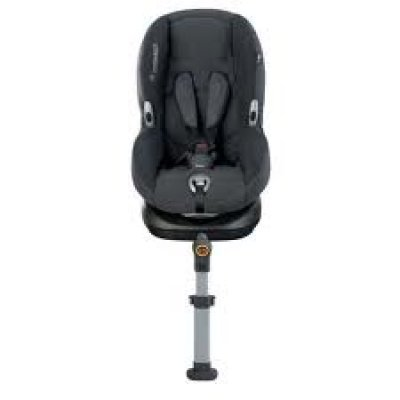
Голландской торговой маркой Maxi Cosi владеет компания Dorel Netherlands, которая является одним из лидеров среди европейских стран по разработке и производству товаров для детей – мебели, колясок, предметов для ухода за новорожденными, изделий для домашней безопасности и автомобильных кресел. Главный офис компании Dorel расположен в Хелмонде, офисы продаж – в Германии и Великобритании. Каждое автокресло Maxi Cosi подвергается жесткому контролю и проверке на устойчивость и прочность в краш-тестах, имеет маркировки ECE R44/04, ECE R44/03 и отвечает европейским стандартам качества. Приобретая данное изделие, покупатели могут не волноваться о том, что за сравнительно небольшие деньги они получат высококачественный продукт работы врачей-ортопедов, дизайнеров, целого штата конструкторов и специалистов по тестированию.
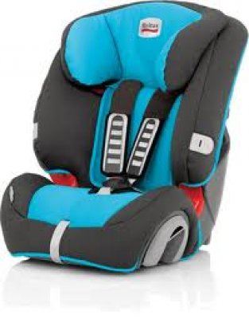
Компанию Britax (Великобритания) также можно отнести к ведущим производителям детских автомобильных кресел. Использование высококачественных материалов и новых технологий сделали бренд Britax весьма популярным во всем мире. С конвейеров заводов Britax сходят высококачественные и безопасные автокресла, которые удостоены статуса Kid's Superbrand. Инженерами компании разработаны сиденья с повышенной боковой защитой при столкновении, системой регулировки кресла, а также оригинальным индикатором силы натяжения ремня, исключающим возможные ошибки при инсталляции автокресла. Кроме того, сконструирована специальная опора, которая гасит вибрацию от неровностей проезжей части. Совместно с врачами-дерматологами созданы специальные чехлы из гипоаллергенных материалов, обладающие влагопоглощающими и воздухопроницаемыми свойствами. Чехлы Comfi-Cool и Comfi-Flex изготовлены из поропласта и набивной ткани, что делает их достаточно прочными и одновременно приятными на ощупь.
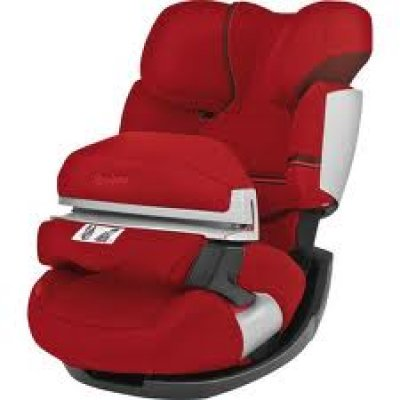
Немецкая компания Cybex – это известный производитель качественных и удобных детских автокресел, обеспечивающих маленьким путешественникам не только максимально возможную безопасность, но и вид продукта с элегантным дизайном. Автокресла имеют следующие преимущества: усиленная боковая защита, инновационный подголовник, удобные подлокотники, приятная текстура обивки, ряд фиксируемых положений спинки, система внутренней вентиляции изделия, оптимальные масса и размеры, а также сравнительно невысокая цена. Все модели проходят жесткий контроль и получают европейский сертификат ECE R44/04. Негативных отзывов от авторитетных экспертов (OAMTC-TEST, ADAC, Stiftung Warentest, ANWB) о продукции компании Cybex практически нет.
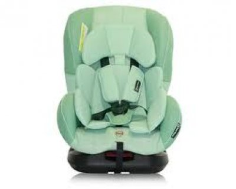
Немецкая компания Concord может похвастаться двадцатипятилетним стажем производства товаров для детей. Вся ее продукция отличается эргономичными формами и прочной конструкцией, а также высоким качеством материалов. Автокресла Concord показывают неплохие результаты в краш-тестах, что подтверждается многочисленными наградами и сертификатами специалистов в области детства и безопасности (например, AutoBild, Mother&Baby, AutoZeitung, ADAC, OEAMTC). Особое восхищение вызывает дизайн детских автомобильных кресел, подбор материалов и цветов. Мягкие набивные чехлы, оснащенные двойной простежкой, обеспечивают приличный комфорт в поездке, а также выполняют функцию демпфера в случае удара. Корпуса автокресел Concord вентилируемые, легко устанавливаются в транспортное средство. Кроме того, они достаточно устойчивы к возможному опрокидыванию.
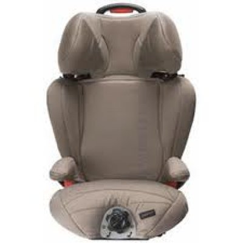
Компания Casualplay – крупнейший производитель детских товаров на территории Испании. Пятьдесят лет под торговой маркой Casualplay выпускаются качественные автомобильные кресла, люльки, сумки-переноски, детские коляски и прочие вещи, необходимые малышам. В производстве Casualplay предпочитает использовать прочные конструкции и экологически чистые материалы. Безопасность и комфорт сидений Casualplay сделали их достаточно известными в тридцати странах.
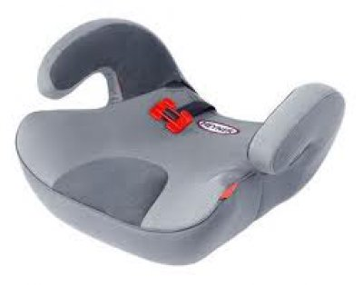
Компания Heyner выпускает детские автокресла и бустеры повышенной прочности. Ее продукция обладает большим набором функций и современным дизайном с применением экологически чистых материалов. Бустеры и автокресла Heyner полностью соответствуют европейскому стандарту безопасности ECE-R 44/04.
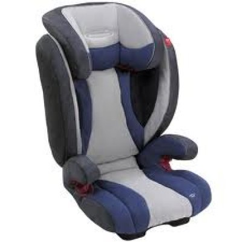
Немецкой компании Storchenmuehle в 2009 году исполнилось 60 лет. Имея внушительный опыт производства детских автомобильных кресел, данная компания гарантирует высочайшее качество, безопасность и комфорт своей продукции. Прочная конструкция изделий в сочетании со спортивным элегантным дизайном делают автокресло STM популярным среди родителей.
Рекомендации по выбору
Одни компании производят автокресла и занимаются этим профессионально и ответственно, а другие лишь дают этим изделиям свои распиаренные наименования. Кроме того, их автокресла, честно говоря, выпускаются непонятно кем и непонятно где.
С одной стороны – громкое название не дает абсолютно никакой гарантии отличного качества. Однако на имя производителя следует обратить свое внимание хотя бы с той целью, чтобы не нарваться на подделку, а также иметь представление о логотипе компании и как он правильно отображается.
Перед покупкой автокресла рекомендуется ознакомиться с историей выбранной торговой марки. Имеет ли данная компания вековую историю. Ведь ею может оказаться вчера появившаяся фирма-однодневка. Все это имеет важное значение.